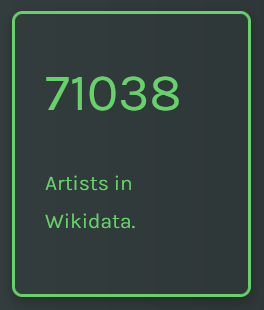
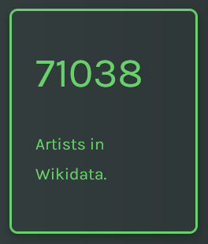

Gaspare Spontini: an 18th century Italian composer
The following article will present the Melody story that explores the WikiData knowledge base to discover the most significant points and events in the Italian composer Gaspare Spontini’s personal and professional life. We will start with a general exploration of the WikiData knowledge base to discover the number of people and artists in comparison with MusicBO. Then, we will narrow down our research by analysing composers in WikiData, until finding the main object of the story: Gaspare Spontini. In particular, we will focus on his biography, occupations and fields of work, the awards he received during his life, where he worked and the cities where he lived. There will be at the end an insight into the Museum Gaspare Spontini, its location and the visitors he had per year.
In the first step, we compared the amount of data related to the category we were interested in both MusicBO and Wikidata knowledge base.
We started with a broad category, "People", and then we narrowed it down first to "Artists" and then to "Composers". In order to have a clear panorama of the data, we decided to build queries to create counters for each category.
As expected, the amount of data on Wikidata was much more significant than the data on MusicBO.
The next step was to count how many male and female composers were on Wikidata and how many male composers were born in Italy.

 

We add a text search that provides you with the possibility to look for composers born in a specific country or city. For each composer, it is then possible to identify their music genres and their notable works if the data is present on Wikidata.

Among the Italian composer, there is Gaspare Spontini, perhaps less known than his main contemporary artists of the 18th century, but he is a composer of remarkable talent. We discovered him by digging in the Polifonia corpus and we were curious to know more about him.
Here is an example of context from MusicBO:
“[...] a few of the chorus gathered in a semicircle around Spontini, in order to have a look at that remarkable man, as he held forth with wonderful effect on the requirements of true theatrical art.”
The second section of the story will analyze his personal and professional life.

Gaspare Spontini's biography
He was born in 1774 in Maiolati, which was at the time in the Papal State, now in the Province of Ancona. During his life, he spent most of his career abroad. He then returned to Italy and died in 1851 in Maiolati.